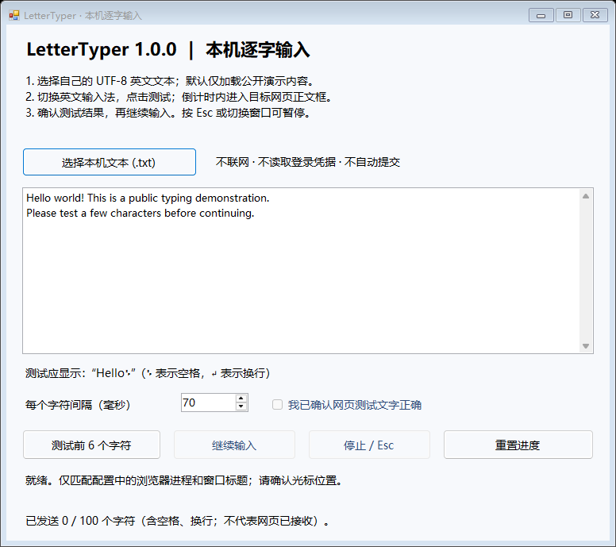
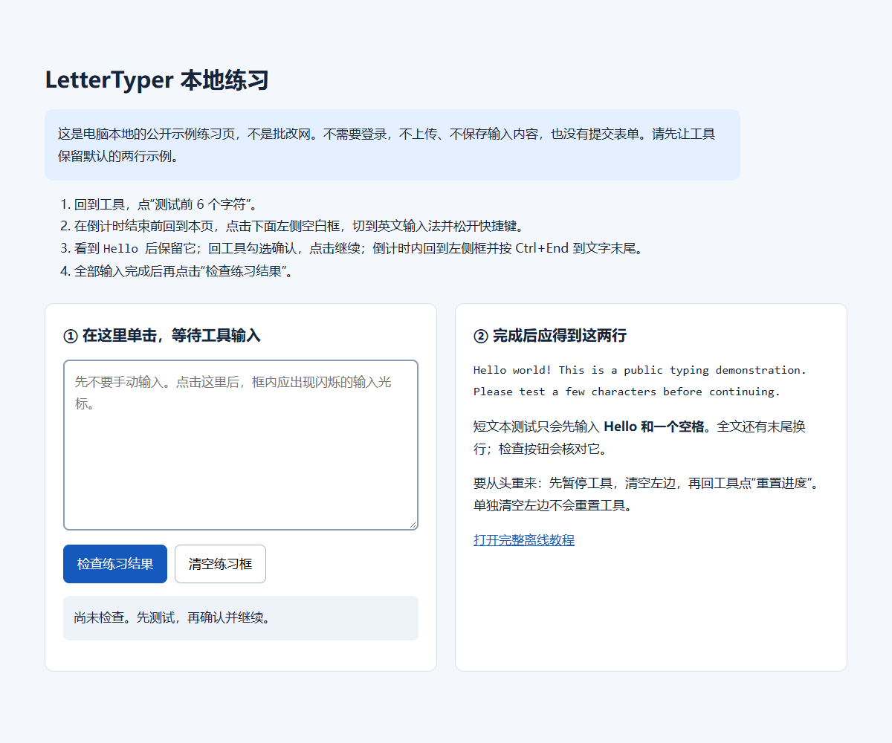

LetterTyper 新手使用教程
这份教程从下载文件开始，不要求会写代码、使用 Git 或运行命令。第一次使用请按顺序完成本地练习，再去自己要录入文字的网站。
完整流程：下载 → 全部解压 → 打开工具 → 本地练习 → 选择自己的英文文件 → 网站测试 → 确认并继续 → 检查后自行提交。
一、先确认电脑能不能使用
| 你使用的设备或页面 | 是否适合 |
|---|---|
| 普通 Windows 10 / Windows 11 电脑 | 支持的目标环境；仍需先做本地练习 |
| 手机、平板、Mac、Linux | 当前版本不支持 |
| 学校、公司管理的电脑 | 可能限制脚本或模拟按键；遇到策略拒绝时请联系管理员 |
| 可以输入多行英文正文的网页 | 先确认页面允许自动录入，再测试 |
| 密码框、搜索框、聊天发送框、按回车会提交的单行框 | 不适用；文章中的换行会发送回车 |
电脑需要 Windows PowerShell 5.1 和 .NET Framework 4.8。许多 Windows 电脑已具备这些组件，可以先按本教程正常启动；若报错再看末尾的常见问题。无需安装 Python、Node.js、Visual Studio、浏览器插件，也无需管理员权限。
“逐字输入”指软件模拟系统按键，并非物理键盘。不同网站可能拒绝它，因此不能保证所有电脑或网页都能使用。
二、下载哪个文件
普通使用者只下载这个包：
文件名应为 LetterTyper-1.0.0-portable.zip。浏览器下载完成后，一般可以在“下载”文件夹找到，也可以在浏览器下载列表中点文件夹图标或“在文件夹中显示”。
暂时不需要下载 source.zip。它是提供给需要看代码、修改或重新打包的人使用的，启动方法虽然相同，但包含更多开发文件。公开下载不要求提供批改网账号或密码。
三、先解压，再启动
- 在文件资源管理器中找到下载好的 ZIP。
- 右键单击 ZIP → 选择“全部解压缩”或“全部提取” → 点击“提取”。 如果菜单名称不同，也可以使用自己熟悉的解压软件，选择解压到一个新文件夹。
- 打开解压出来的文件夹。如果里面只有一个
LetterTyper-1.0.0-portable文件夹，再双击进入一次。 - 找到
start.cmd，双击它。若系统隐藏扩展名，你可能只看到start，文件类型通常显示为“Windows 命令脚本”。 - 等待几秒，应出现标题为 “LetterTyper · 本机逐字输入” 的窗口。
不要在 ZIP 预览窗口里直接运行，也不要只把 start.cmd 拖出来。 正确目录中至少能看到以下文件或文件夹：
start.cmd ← 双击这个启动
LetterTyper.cs ← 启动所需源码，不需要打开
开始使用.html ← 双击这个离线阅读完整教程
使用前先看.txt ← 简短提示
examples/ ← 公开示例和本地练习页
docs/ ← 文档和截图
config.example.json ← 示例配置，新手不用修改
启动时同时出现黑色命令窗口属于正常现象。它承载程序，使用期间不要关闭；关闭可能让工具退出。若找不到工具，按住键盘上的 Alt，再按 Tab 切换窗口，找到 LetterTyper 后松开。
若看到“组织策略禁止”“应用程序控制阻止”“FullLanguage”或“Add-Type 被拒绝”等信息，先停止，不要关闭防护或尝试提权。具体处理见文末。
四、认识工具窗口

| 在哪里 | 显示内容或按钮 | 作用 |
|---|---|---|
| 上方左侧 | 选择本机文本 (.txt) | 换成你自己的英文文本；第一次练习暂时不用点 |
| 中间大白框 | 两行英文示例 | 预览将要输入的内容；不能在这里修改文章 |
| 大白框下方 | 测试应显示 | 告诉你网页先应该收到哪些字符 |
| 下方左侧数字框 | 每个字符间隔（毫秒） | 数字越大，输入越慢；初次保留 70 即可 |
| 下方右侧复选框 | 我已确认网页测试文字正确 | 短文本测试完成后才可勾选 |
| 底部左侧按钮 | 测试前 6 个字符 | 先发送开头几个字符，然后暂停 |
| 底部第二个按钮 | 继续输入 | 测试正确并勾选确认后，从剩余内容继续 |
| 底部第三个按钮 | 停止 / Esc | 暂停正在进行的倒计时或输入 |
| 底部最右按钮 | 重置进度 | 让工具从开头重新计算；不会删除网页上的文字 |
| 最下面 | 状态和已发送字符数 | 查看目前是否在倒计时、输入、暂停或完成 |
界面里的 ␠ 是“空格”的可视标记，↵ 是“换行”的可视标记。它们不是要求你额外输入的符号。
五、第一次先用本地练习页
这一步不需要登录、不连接批改网，也不会保存练习内容。请保留工具默认加载的两行英文，不要先选自己的文章。
第 1 步：打开练习页
- 保持工具打开，回到解压目录。
- 打开
examples文件夹，双击practice.html。 - 它应在浏览器中打开，页面上方写着“LetterTyper 本地练习”。
- 左边是空白练习框，右边是应出现的完整示例。此时先不要手动输入文字。
若 HTML 被其他软件打开，右键该文件 →“打开方式”→ 选择 Microsoft Edge 或 Google Chrome。支持名单还包含 Firefox、Brave、Opera、Vivaldi，但没有逐一验证。练习页标题有 pigai，只是为了匹配工具默认规则；它不是批改网，不需要账号。

第 2 步：试输入前 6 个字符
- 按
Alt + Tab切回 LetterTyper。 - 看“测试应显示”，默认应为
Hello␠，即字母Hello后面有一个普通空格。 - 点击 “测试前 6 个字符”。工具开始默认 8 秒倒计时。
- 在倒计时结束前，按 Alt + Tab 切到练习页，再用鼠标左键点击左边的空白练习框。 框里应出现一条闪烁的竖线，这就是输入光标。
- 切换成英文输入法，松开
Alt / Ctrl / Shift / Win等键，等待倒计时结束。不要再点其他地方。 - 正常情况下，练习框会出现
Hello，然后自动停止。
这一小步成功的标准：左边收到 Hello 和末尾一个空格，工具停在 6 个已发送字符附近，不继续发送全文。 若界面经过配置修改，测试数量可能不是 6，请以工具显示为准。
8 秒来不及也没关系：如果工具提示窗口不匹配，点击测试按钮重试；如果已经输入了部分测试文字，不要删除它，下一次测试会从当前进度继续。
第 3 步：确认后继续
- 保留练习框里的
Hello，不要删除，也不要自己再打一遍。 - 切回工具，勾选 “我已确认网页测试文字正确”。
- 点击 “继续输入”，倒计时重新开始。
- 在倒计时内切回练习页，单击左边练习框，再按
Ctrl + End将光标放到已有文字末尾。随后松开所有快捷键。 - 等待剩余文字输入完成，不要碰键盘或移动光标。
- 输入停止后，再点击练习页的 “检查练习结果”。应显示“练习成功”，并与右侧两行英文一致。
如果只剩开头几个字符、继续按钮仍是灰色，通常是还没勾选确认。如果文章本身短于或等于测试长度，测试已经发送了全文，不需要继续。
第 4 步：有问题时怎么重来
- 先按住
Esc约 1 秒，或切回工具并点击“停止 / Esc”。 - 在练习页点击“清空练习框”。这只清空练习页。
- 切回工具，点击“重置进度”，阅读提示后确认。这只重置工具。
- 重新按上面的“测试 → 勾选确认 → 继续”流程操作。
练习页通过，才说明当前电脑和这个本地多行框能接收模拟输入；不代表所有网站都能接收。 如果练习页始终失败，先看文末问题表，不要直接拿真实正文反复试。
六、把自己的英文保存为文件
本地练习成功后，再准备真正要录入的文字。
- 在 Windows 开始菜单搜索并打开 “记事本”。
- 在记事本中输入或粘贴你自己准备好的英文。网站禁止粘贴不影响你在本机记事本里准备文件。
- 按
Ctrl + Shift + S打开“另存为”。如果当前记事本版本没有响应，用“文件”菜单中的“另存为”。 - 选择一个自己找得到的位置，例如“文档”，文件名填写
my-text.txt。 - 如果对话框显示“保存类型”，选择文本文件；如果显示“编码”，选择 UTF-8，然后保存。
- 回到 LetterTyper，点击 “选择本机文本 (.txt)”，找到
my-text.txt，双击它。 - 检查大白框里的预览：应是你的英文，不再是
Hello world!演示内容。文件里的换行和末尾空行也会被输入。
如果不知道保存到了哪里，回到记事本重新“另存为”，选一个明确的位置，再到工具里选择该文件。不要选 Word 的 .docx、PDF 或图片；改扩展名不会把它们变成纯文本。
哪些字符可以用
支持普通英文字母、数字、半角标点、普通空格和换行。暂不支持中文、emoji、弯引号、长破折号、制表符等。
| 可能出错的内容 | 建议替换 |
|---|---|
弯单引号：’、‘ | 普通直单引号：' |
弯双引号：“、” | 普通直双引号：" |
长破折号：—、– | 普通减号：- |
| 一整格缩进 / Tab | 几个普通空格 |
| 中文逗号、句号、冒号 | 半角 ,、.、: |
| 从网页复制的不换行空格 | 删除后用空格键重新输入 |
支持 1–100000 个字符，文件大小不能超过 400000 字节。若报不支持字符，先在记事本修改并保存，再在工具中重新选择文件。只修改记事本而不重新选择文件，工具仍会使用之前读入的内容。
自己的文件放在项目之外，或被 Git 忽略的 data/ 目录。不要把私人正文写进公开示例，也不要将其上传到 GitHub。
七、去真正的网站录入
1. 找到正文输入框
用浏览器自行进入允许录入的页面并登录。默认工具只匹配标题包含“批改”或 pigai 的浏览器窗口，可用于尝试批改网作文编辑页；它不会打开题目、登录账号或选择作业。
要点击的是能输入多行正文的大框，不是文章标题框、搜索框或成绩点评区。页面布局可能变化；判断方法是点击后能出现输入光标，并能放入多行文字。工具无法替你确认点对了哪个框。
如果正文里已有内容，请先自行备份。确定要整篇重新录入时，在正文框内按 Ctrl + A 全选，再按 Backspace 清空。必须先点进正文框；若按 Ctrl+A 后整页都被选中，说明没有选中输入框，先重新点击正确位置。
2. 重新做短文本测试
选择自己的文件后，进度会从零开始，测试预期也会变成你文章的开头。不要再按默认的 Hello 判断。
点击测试 → 倒计时内切回网页正文框 → 使用英文输入法并松开快捷键 → 检查实际出现的字母、空格和换行。失败时先停止并排查，不要勾选确认。
3. 测试正确，再继续
保留已经输入的测试文字 → 返回工具勾选确认 → 点击继续 → 倒计时内切回同一个正文框 → 用 Ctrl + End 把光标放到已有文字末尾并松开按键 → 等待完成。
输入期间不要切换标签页、操作键盘、拖动光标或点击其他输入框。数字越大输入越慢；若页面漏字，可停止后把字符间隔从 70 改到 150 或 300 毫秒，再重新做少量测试。调慢不能保证网站一定接受模拟输入。
4. 最后自行检查并提交
工具显示“已发送全部文字”后，肉眼检查开头、结尾、段落、标点、词数和网页保存状态。计数只代表按键已经发送，不代表网站完整收到。
确认无误后，由你自己使用网站的保存或提交按钮。工具不会自动提交；但文章里的换行会发送 Enter，因此不能拿它输入按回车就会提交的单行框。
八、暂停、继续和重新开始，有什么区别
| 你想做什么 | 具体操作 | 网页上的文字会怎样 |
|---|---|---|
| 马上停止 | 按住 Esc 约 1 秒；或切回工具点停止 | 已输入的文字保留 |
| 从暂停位置继续 | 保留已有文字；在工具点继续，倒计时内回到正文末尾 | 从内存记录的位置往后输入 |
| 测试还没完成就暂停了 | 保留已有测试文字，再点测试，回到文字末尾 | 补完剩余测试字符后再次暂停 |
| 整篇从头开始 | 先备份并清空正文，再点工具的重置进度 | 只有你清空网页后才不会重复 |
| 换一篇文章 | 在工具中重新选择文本文件，并处理网页旧内容 | 工具会重置，但网页旧内容不会自动清空 |
| 关闭工具后再打开 | 按从头开始处理 | 工具不记得上次进度，网页内容可能还在 |
如果你手动删字、改字，或网页漏字了，不要直接依赖计数续输。 工具不会读取网页并寻找正确位置。无法确定时，先备份当前正文，再清空网页、重置工具并从头录入。
九、卡住时按现象找答案
| 看到的现象 | 按顺序处理 |
|---|---|
| 找不到 start.cmd | 确认已全部解压；进入内层文件夹；可能显示为 start。不要双击 LetterTyper.cs。 |
| 工具一闪就没了 | 在包含 start.cmd 的文件夹中，点顶部地址栏，输入 cmd 并按回车；在出现的黑色窗口输入 start.cmd 后回车，查看错误。向维护者反馈时只发错误文字，不发私人文章。 |
| 黑色窗口出现但工具没出来 | 先等待几秒，再按 Alt+Tab 查看是否在后面；仍没有则读取黑色窗口错误，不要不断重复打开。 |
| 提示找不到 LetterTyper.cs 或 examples/sample.txt | 文件未完整解压或启动器被单独移动。重新完整解压，不要单独复制 start.cmd。 |
| FullLanguage、Add-Type、应用程序控制或组织策略拒绝 | 电脑不允许这种启动方式；停止并联系设备管理员。不要关闭防护、不要用管理员权限强行启动。 |
| 提示缺少 .NET 组件 | 参考文末 Microsoft 官方安装指南；受管电脑请管理员安装。 |
| 继续输入按钮是灰色 | 先完成短文本测试，再勾选确认；若全文已在测试阶段输入完，就无需继续。 |
| 测试确认框也是灰色 | 说明短文本测试尚未完成。先检查前台窗口和光标，再点测试。 |
| 提示前台窗口不匹配 | 倒计时结束前必须切到浏览器并点正文框；默认标题需含“批改”或 pigai。先用 examples/practice.html 排除网站因素。 |
| 点击测试后什么也没有 | 查工具状态，检查光标、英文输入法和窗口标题。若是网站，先回到本地练习确认电脑能接收。 |
| 输入成中文或出现候选词 | 暂停；点击目标框后切换为英文输入法，重做短文本测试。 |
| 漏字、顺序乱或多了内容 | 先暂停。检查是否有多个工具实例、是否保留了旧正文、是否移动过光标。必要时清空正文并重置，适当增大间隔。 |
| 自动暂停 | 查看底部状态；切换窗口、标题变化、Esc、快捷键没松开或发送失败都会暂停。 |
| Esc 轻点没反应 | 按住约 1 秒，或切到工具窗口暂停。检测是轮询，极短按键可能错过。 |
| 选文件后报不支持字符 | 对照第六节替换弯引号、中文标点、Tab 等；保存 UTF-8 后重新选择文件。 |
| 练习页检查提示不一致 | 确认工具加载的是默认 sample.txt。若换过自己的文章，重新启动工具恢复默认示例，再清空练习框重试。 |
| 练习检查按钮无反应 | 浏览器可能限制本地脚本。仍可把左侧文字与右侧两行答案人工比较；不要为此降低浏览器安全设置。 |
| 修改了文件，工具还输入旧文字 | 文件加载后不会自动刷新；保存后在工具里重新选择一次。 |
| 不知道能否填其他网站 | 普通新手先使用默认范围。更改配置仅放宽匹配规则，不证明页面兼容；需要单独测试。 |
若仍需帮助，请说明 Windows 版本、浏览器名称、卡在哪一步，以及底部状态或错误文字。不要发送账号、密码、Cookie、Token、学生信息或私人正文。
十、新手通常不用动的高级设置
默认无需修改配置。如果每次 8 秒都来不及，可关闭工具，把 config.example.json 复制一份并命名为 config.local.json，用记事本将 countdownSeconds 的值由 8 改为 15，保存后重新启动。不要误存为 config.local.json.txt，不要删掉引号、逗号和大括号。
标题匹配、浏览器进程和其他参数详见 README。对 JSON 不熟悉时请让熟悉的人协助，或继续使用默认设置。配置中不需要也不应填写任何账号、密码、Cookie 或 Token。
程序只读取你主动选择的文本、可选本地配置及前台窗口元数据。正常录入不联网、不使用剪贴板、不读取登录数据，不保存文章或输入进度。文件选择对话框可能由 Windows 自行记录最近使用位置。
窗口标题可以伪造，也不能判断光标位置。切换到同标题页面可能未被检测；因此始终要先测试并保持输入焦点。实际浏览器/网站兼容情况见验证记录，不能把教程当作所有设备均已实测通过的承诺。
十一、退出、卸载与分享
- 退出： 先暂停，再关闭工具窗口。不要让不需要的多个实例同时运行。
- 卸载： 关闭后删除解压目录即可；自己的文本先移到要保留的位置。工具没有安装服务或浏览器扩展。
- 分享： 分享项目的公开下载链接或原始发布 ZIP，不要直接压缩自己的使用目录，以免夹带正文和本地配置。
- 离线阅读： 解压目录中双击“开始使用.html”；图片和练习页也在本地，首次下载后不需要联网阅读或练习。
官方参考：Microsoft .NET Framework 安装指南。
一句话记住：先完整解压，再打开 start.cmd；先在本地练习；选好自己的文件后，先测试、再确认、再继续。